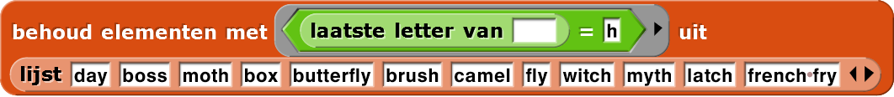

Taal modeleren: Meervoudsvormen, deel 1
kletspraat, dat schrijft. Nu kan je de computer zijn
taalcapaciteiten verder ontwikkelen met een rapporteurblok, meervoud, dat een Engels
zelfstandig naamwoord als invoer heeft en op de juiste manier het meervoud als uitvoer geeft.
Een woord in het meervoud zetten voelt bijna automatisch voor een mens, maar dit is niet zo makkelijk als het lijkt: een computer heeft een algoritme nodig om deze taak uit te voeren.
- Voor dit project zal je de nieuwe blokken
en
gebruiken. Je zal ook
en
nodig hebben, die je al
gebruikt hebt in Hoofdstuk 1 Les 2, Kletsen en coderen.

Probeer alle stukken code in het project (alle negen) en experimenteer met de invoer tot je zeker weet dat je ze begrijpt. Leg voor ieder script uit wat het in het algemeen doet, niet alleen wat het doet met een specifieke invoer. ( rapporteert bijvoorbeeld y, maar je wil eigenlijk ook uitleggen watlaatste letter vanrapporteert als2017de invoer is.) - Hier is een manier om het
meervoudblok te beginnen te bouwen. Bouw dit na en test of het in ieder geval werkt voor "day", "boss" en "medicine", zodat je weet of het echt werkt. Als het niet werkt, los dan de problemen op
- Debugging: Try to find words for which this version of
pluraldoes not work correctly. List the words you find. Organize that list, sorting the words into categories according to their last letter. For example, it will get wrong some words that end with the letter h. Try to find many words it gets wrong. - Save your list.
- Create a Snap! list like this containing all of your words.
-
"H2-Meervoud"
 Sla je project op. Je zal deze
lijst nodig hebben.
Sla je project op. Je zal deze
lijst nodig hebben.
-
meervoudzou nu goed moeten werken voor "day", "boss" en "medicijn", maar het werkt waarschijnlijk nog niet voor "box".
Pas je
meervoudblok aan zodat het werkt voor woorden die eindigen op een 'x'. Test het om zeker te weten dat het goed werkt.
meervoudblok aanmaakt.
Je kan een vergelijkbaar blok maken om werkwoorden in het Engels te verbuigen. Je kan het ook voor een andere taal zoals Frans of Spaans proberen. Kijk hiervoor naar de Een stapje verder-sectie onderaan de pagina.
De volgende stappen zijn het waard om te leren; heel handig voor het testen van
meervoud en voor meer ingewikkelde projecten later. Het is alleen niet essentieel om
meervoud te bouwen.
- Gebruik
mapom alle woorden in je lijst te testen. Laat het invoervak inmeervoudleeg, zoals je hier ziet. Hetmapblok voegt ieder element in de lijst in dat invoervak en rapporteert een lijst met resultaten.For now, don't worry about the words it still gets wrong, as long as it works for "day," "boss," "medicine," and "box."
- Vervang in je
mapscript hetmeervoudblok met . Voer het aangepaste script uit. Leg nu uit wat hetmapblok in het algemeen doet. - Experimenteer met

en
om te zien wat ze doen. Laat weer het invoervak inlaatste letter vanleeg, zoals je hier ziet. Dat is de plaatsvervanger voorbehoudom ieder woord in de lijst te testen. Leg uit wat hetbehoudblok doet.